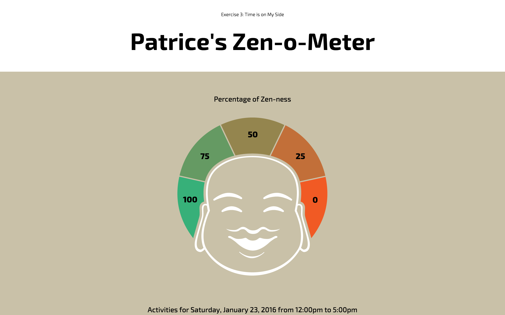
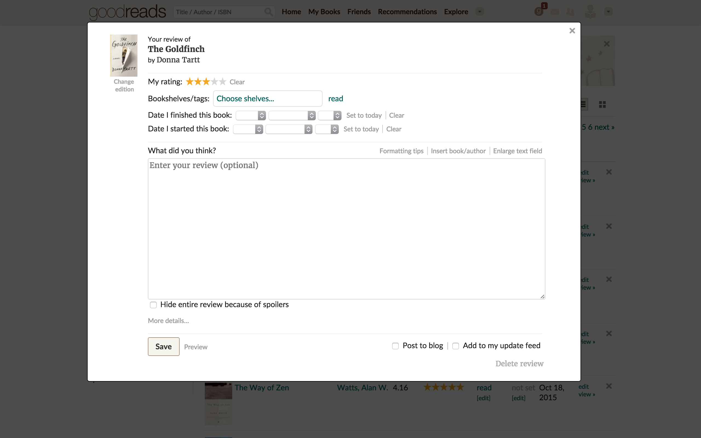

28 Jan 2016
Patrice's Zen-o-Meter

Why this is so attractive:
Because it's Buddha with an afro, homies.
Why this is so effective:
This exercise uses many, many principles of effective information design. Also, I'm a
super interesting person.
19 Jan 2016
Goodreads Form

Priority:
Do the elements have a hierarchy? Typographically, this form doesn't have much of a hierarchy (why are there two fonts?).
The hierarchy mostly comes from dividing lines that separate sections. The size of text fields could arguably
denote hierarchy as well; the field for a reader's review is gigantic compared to the other fields. The yellow
rating stars also stand out.
Clarity:
Does the interface communicate clearly? On the whole, I think so. I've never had a problem understanding this form.
With a few small improvements (perhaps make "Delete Review" red and "Post to Blog" green) the form would be even
more clear. The light gray text is difficult to read on a white background. I think this form would benefit from
using only one typeface as well.
Purpose:
Does the product maintain its essence? Absolutely. Goodreads is like Yelp for books, and this form captures two
very important features: the reader's rating and review. The form gives the user plenty of room to write, too, suggesting
that the user's opinion is very damn important.
07 Jan 2016
Yamaha HTR-5740 AV Receiver

Visual Design:
This receiver will not be winning any product design awards, in my opinion.
The text is set in all caps, and the size of the text is miniscule even for my young eyes.
I would expect my father to be grumbling while he unearths a pair of strong reading glasses just
so he can figure out which button he is pushing. Perhaps the text labels would be more effective if
set in a different typeface (maybe Helvetica Neue or something else that works well at small sizes)
in lower or title case. I don't mind the black buttons, but I would personally have designed a bit
more contrast into the "power" button. The "power" button is black, like all the other buttons,
and has the same "feel" when pressed as all the other buttons. I would have made the power button a different
color, and incorporated some other indication that it's different from the other buttons.
Appeal:
This receiver is not sexy. Perhaps it is sexy to an electronic music guru or someone who spends time steeped
in the recording arts. For the average person who wants an average receiver, this interface, at first glance,
appears intimidating and technical because of the ambiguously labeled controls (it's almost like the interface
expects the user to be an expert) and the lack of readily available instruction "in the world". The receiver
almost looks somber because of how black it is.
Effectiveness:
Not very. Figuring out what each control is used for requires a careful study of the receiver's manual, instead
of simply looking at the control labels. For example, one button is ambiguously labeled "A/B/C/D/E". Like many
amps and receivers, the modes, meant to simplify the control of multiple devices, in fact complicate operations
more than necessary. To use this receiver properly is simply too time consuming. I've had the receiver for five
years, and I still turn it to "DVD" mode to play a vinyl record.